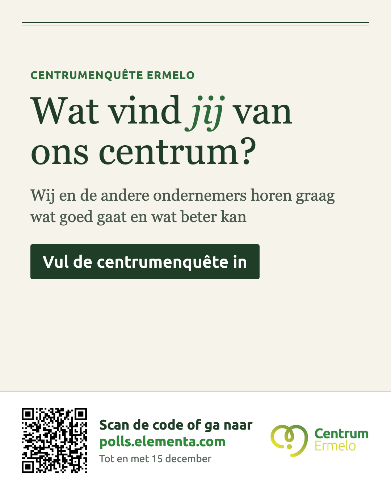
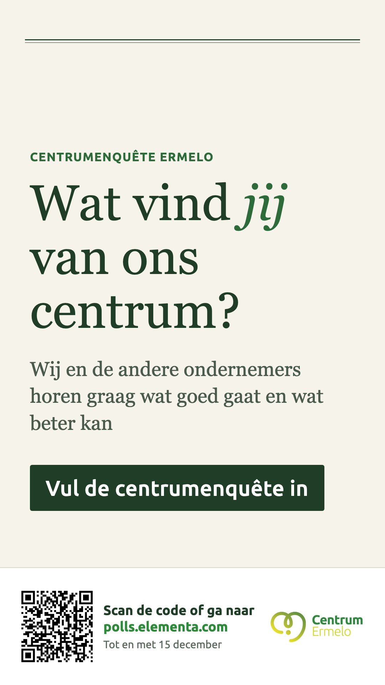
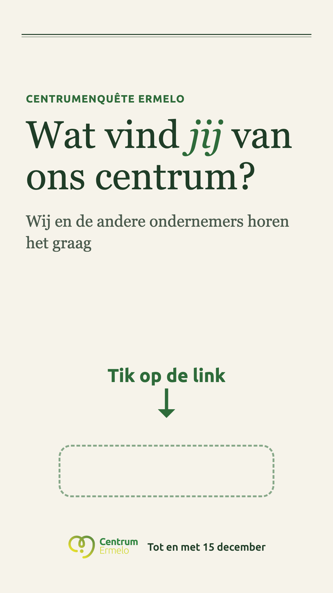
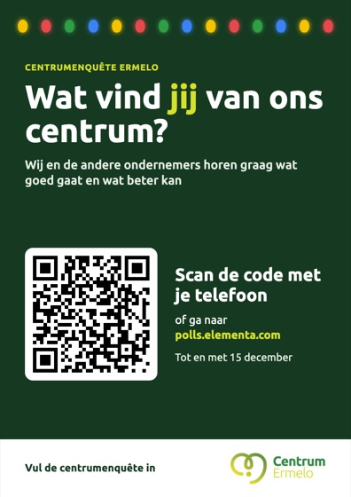
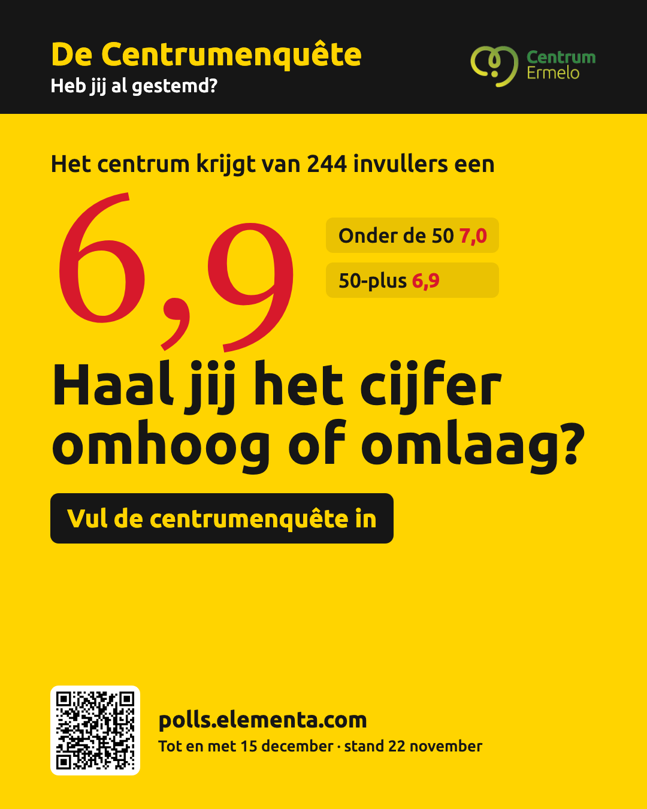
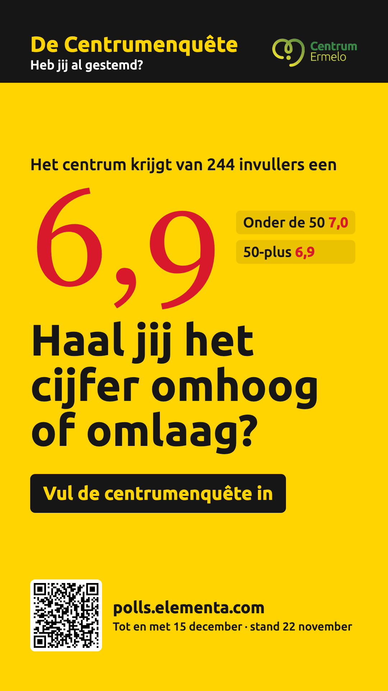

Alles in één keer
Liever alles tegelijk op je computer? Dan krijg je één map met alle plaatjes, de poster en de teksten.
⬇ Download alles (zip)1
Een bericht op Facebook of Instagram

- Op je telefoon: houd je vinger op het plaatje hierboven en kies Zet in Foto's (iPhone) of Afbeelding downloaden (Android).
Op de computer: klik met de rechtermuisknop op het plaatje en kies Afbeelding opslaan als… - Tik op Kopieer tekst.
- Open Facebook of Instagram en maak een nieuw bericht. Kies het plaatje.
- Tik in het tekstvak, houd je vinger even stil en kies Plakken.
- Tik op Plaatsen of Delen. Klaar!
Wat vind jij van het centrum van Ermelo? 🛍️ Wij en de andere ondernemers in het centrum willen graag weten wat goed gaat en wat beter kan. Vul de centrumenquête in: het kan tot en met 15 december. 👉 https://polls.elementa.com/polls/centrum-enquete?bron=ondernemer

2
Een story (Facebook of Instagram)

- Op je telefoon: houd je vinger op het plaatje hierboven en kies Zet in Foto's (iPhone) of Afbeelding downloaden (Android).
Op de computer: klik met de rechtermuisknop op het plaatje en kies Afbeelding opslaan als… - Open Instagram of Facebook en maak een story (het plusje). Kies het plaatje.
- Klaar! Wie het ziet, kan de QR-code scannen of naar polls.elementa.com gaan.

3
Een story met een link om op te tikken

Iets meer werk, maar dan kunnen je volgers met één tik naar de enquête.
- Op je telefoon: houd je vinger op het plaatje hierboven en kies Zet in Foto's (iPhone) of Afbeelding downloaden (Android).
Op de computer: klik met de rechtermuisknop op het plaatje en kies Afbeelding opslaan als…
Tik daarna op Kopieer link. - Maak een story met het plaatje.
- Tik bovenin op het sticker-icoon (het vierkantje met een smiley) en kies Link.
- Houd je vinger in het vak, kies Plakken en tik op Klaar.
- Schuif de sticker op het gestippelde vak en deel je story.
https://polls.elementa.com/polls/centrum-enquete?bron=ondernemer

4
Een poster voor in je etalage of bij de kassa

- Tik op Download poster.
- Print hem op A4, in kleur als het kan.
- Hang hem op waar je klanten hem zien. Zij scannen de QR-code met hun telefoon.
5
De gele versie, met het cijfer van nu

Het centrum staat op een 6,9 (stand 22 november). Prikkel je volgers: halen zij het cijfer omhoog of omlaag?

- Op je telefoon: houd je vinger op het plaatje en kies Zet in Foto's (iPhone) of Afbeelding downloaden (Android).
Op de computer: klik met de rechtermuisknop op het plaatje en kies Afbeelding opslaan als… - Voor een bericht: tik op Kopieer tekst en plak die onder het plaatje.
- Voor een story: kies het staande plaatje.
Het centrum van Ermelo krijgt nu een 6,9 van 244 invullers. Haal jij het cijfer omhoog of omlaag? 🤔 Vul de centrumenquête in en laat weten wat jij van het centrum vindt. Het kan tot en met 15 december. 👉 https://polls.elementa.com/polls/centrum-enquete?bron=ondernemer


Lukt het niet? Vraag het IJme van Elementa: hij helpt je graag even op weg.